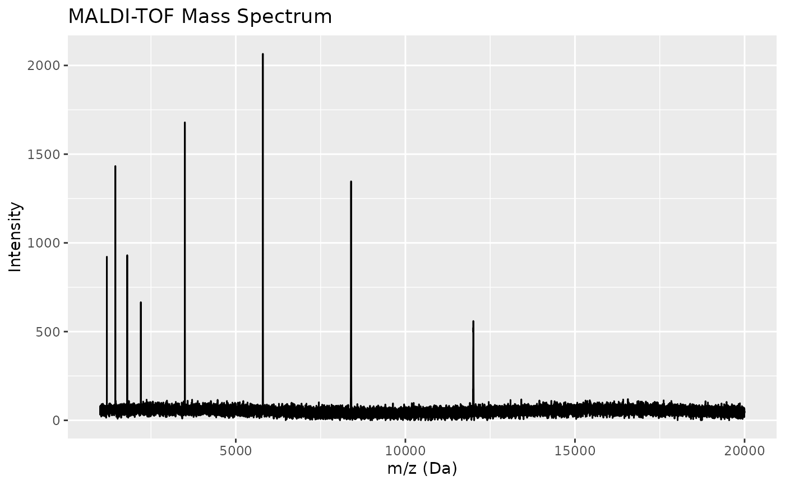
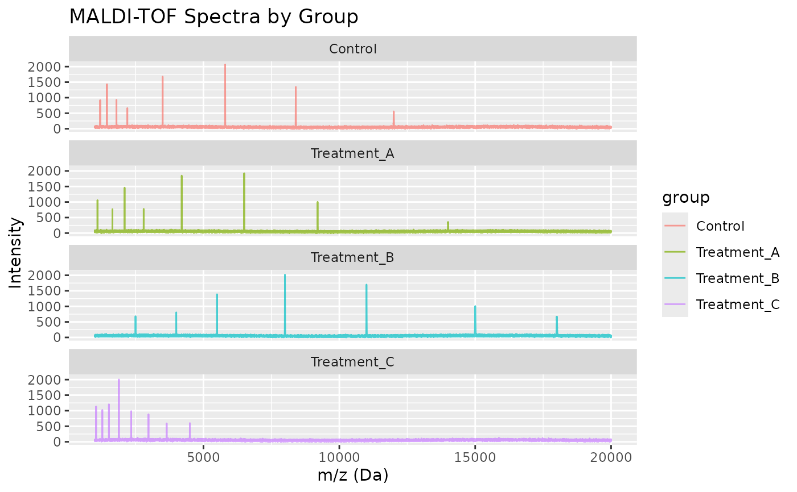

Simulated MALDI-TOF (Matrix-Assisted Laser Desorption/Ionization Time-of-Flight) mass spectrometry data for demonstration of mass spectral preprocessing. The dataset represents protein/peptide analysis from four experimental groups with four replicates each.
Format
A tibble with 304,016 observations and 5 variables:
- sample_id
Sample identifier combining group and replicate
- group
Experimental group ("Control", "Treatment_A", "Treatment_B", "Treatment_C")
- replicate
Replicate number (1-4)
- mz
Mass-to-charge ratio (m/z) in Daltons (1000-20000 Da)
- intensity
Signal intensity (arbitrary units)
Source
Simulated data generated for the measure package. See
data-raw/generate_datasets.R for the generation script.
Details
MALDI-TOF is a soft ionization technique commonly used for analyzing biomolecules such as proteins, peptides, and polymers. The technique provides mass-to-charge (m/z) ratios that can be used for identification and quantification.
The spectra include realistic features such as:
Multiple peptide/protein peaks at different m/z values
Baseline variation
Chemical noise
Peak width proportional to m/z (resolution effects)
Replicate variation
This dataset is useful for demonstrating:
Baseline correction methods
Peak detection for mass spectra
Normalization between samples
Differential analysis between groups
Each group has a characteristic peak pattern:
Control: Peptides at m/z ~1200, 1450, 1800, 2200, 3500, 5800, 8400, 12000
Treatment_A: Peptides at m/z ~1100, 1650, 2100, 2800, 4200, 6500, 9200, 14000
Treatment_B: Proteins at m/z ~2500, 4000, 5500, 8000, 11000, 15000, 18000
Treatment_C: Peptides at m/z ~1050, 1280, 1520, 1890, 2340, 2980, 3650, 4500
The m/z resolution is approximately 500 ppm (parts per million), typical for linear MALDI-TOF instruments. Note that simulated spectra include baseline noise and minor peaks in addition to the characteristic peaks listed above.
See also
hplc_chromatograms for HPLC chromatography data
meats_long for NIR spectroscopy data
Examples
data(maldi_spectra)
# View structure
str(maldi_spectra)
#> tibble [304,016 × 5] (S3: tbl_df/tbl/data.frame)
#> $ sample_id: chr [1:304016] "Control_1" "Control_1" "Control_1" "Control_1" ...
#> $ group : chr [1:304016] "Control" "Control" "Control" "Control" ...
#> $ replicate: int [1:304016] 1 1 1 1 1 1 1 1 1 1 ...
#> $ mz : num [1:304016] 1000 1001 1002 1003 1004 ...
#> $ intensity: num [1:304016] 33.5 56.6 70.1 31.5 37.2 ...
# Get unique samples
unique(maldi_spectra$sample_id)
#> [1] "Control_1" "Control_2" "Control_3" "Control_4"
#> [5] "Treatment_A_1" "Treatment_A_2" "Treatment_A_3" "Treatment_A_4"
#> [9] "Treatment_B_1" "Treatment_B_2" "Treatment_B_3" "Treatment_B_4"
#> [13] "Treatment_C_1" "Treatment_C_2" "Treatment_C_3" "Treatment_C_4"
# Get one spectrum
library(dplyr)
spec_1 <- maldi_spectra |> filter(sample_id == "Control_1")
# Plot (if ggplot2 available)
if (requireNamespace("ggplot2", quietly = TRUE)) {
library(ggplot2)
ggplot(spec_1, aes(x = mz, y = intensity)) +
geom_line() +
labs(x = "m/z (Da)", y = "Intensity",
title = "MALDI-TOF Mass Spectrum")
}

# Compare groups
if (requireNamespace("ggplot2", quietly = TRUE)) {
# Get one replicate per group
comparison <- maldi_spectra |>
filter(replicate == 1)
ggplot(comparison, aes(x = mz, y = intensity, color = group)) +
geom_line(alpha = 0.7) +
facet_wrap(~group, ncol = 1) +
labs(x = "m/z (Da)", y = "Intensity",
title = "MALDI-TOF Spectra by Group")
}
